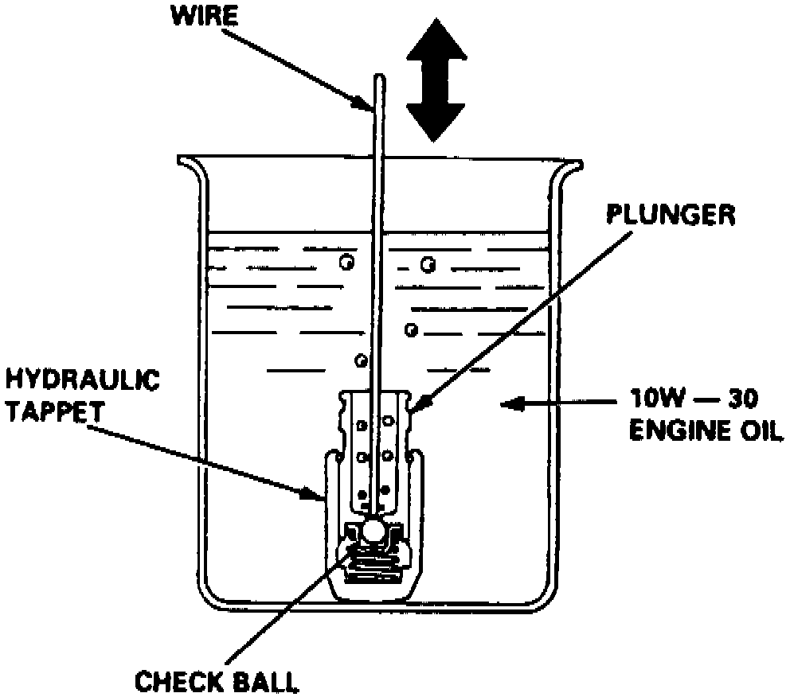

Lifter / Lash Adjuster: Service and Repair
Fig. 55 Hydraulic Lifter Bleed:

The hydraulic valve lifters cannot be disassembled and must be serviced as an assembly.
1. Inspect lifters for excessive wear or damage or an obstructed oil passage.
2. Measure free length of each valve lifter as follows:
a. Attach suitable tappet bleeder tool to tappet, then depress and release bleeder slowly with assembly submerged in clean engine oil, Fig. 55.
b. Operate bleeder until there are no air bubbles from lifter.
c. Remove lifter from oil and attempt to quickly compress it by hand.
d. Measure compression stroke of lifter using a suitable dial indicator. Compression should measure 0.0004-0.0030 inches.